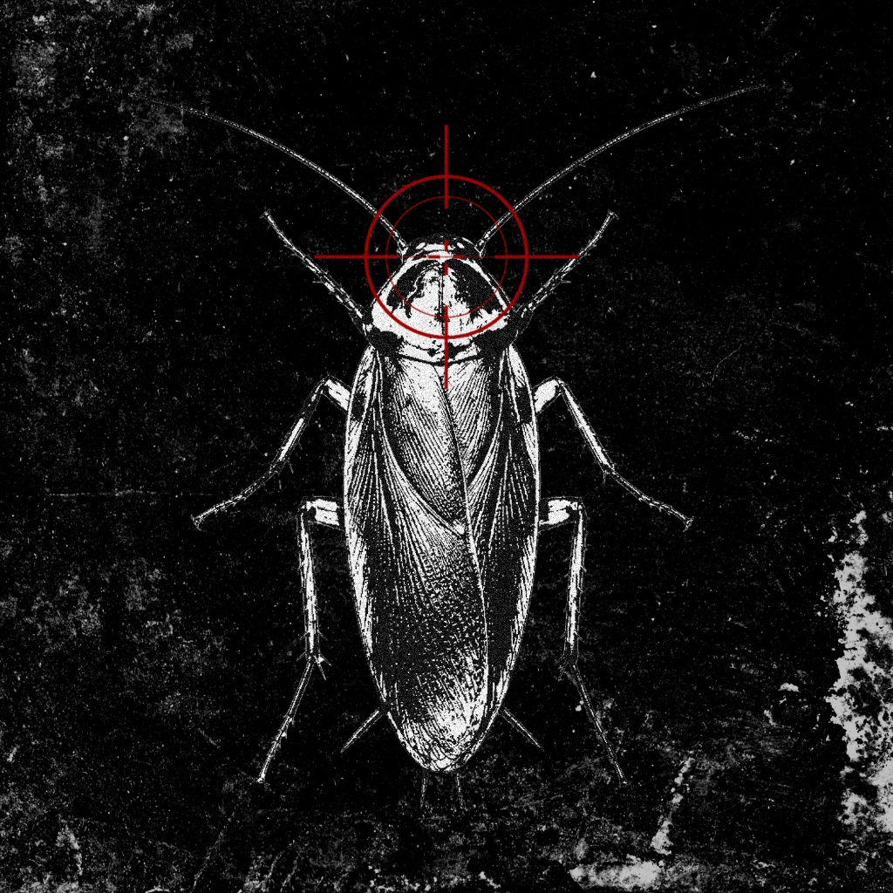
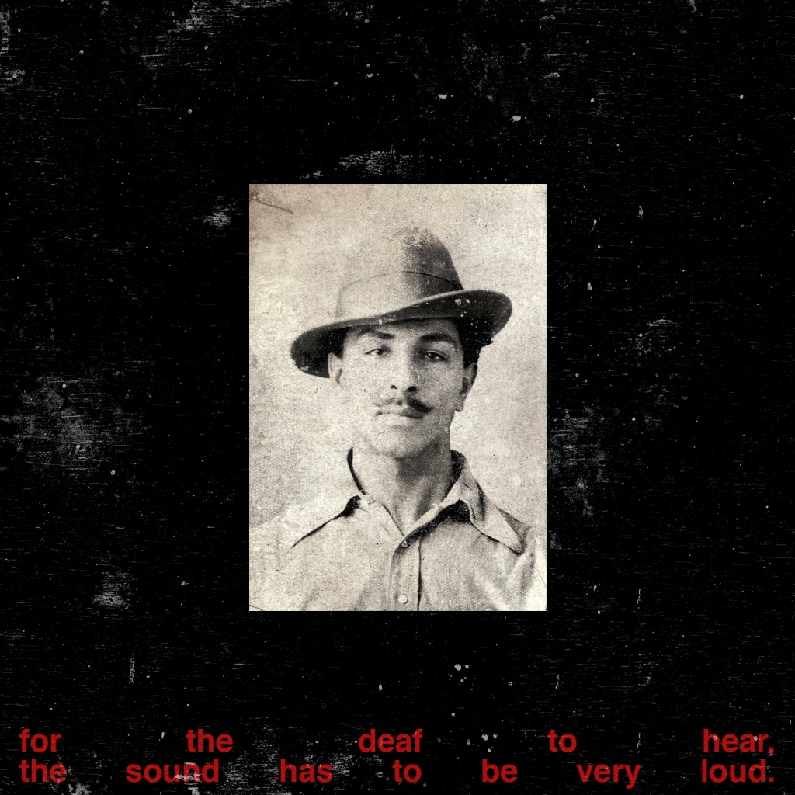
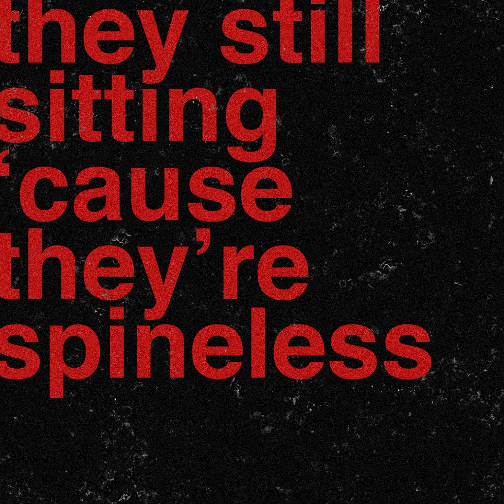
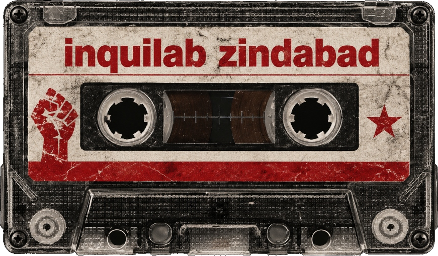

POSTER 01
SYMBOLIC TARGETING GRAPHIC

Protest Poster Series & Cassette Artwork
In June–July 2026, I independently created these posters in support of the Delhi protest. Artists were expressing their support through their respective art forms. The collective initiative was called "Art Against Fascists". This was an independent artistic contribution in support of the protest, not a commissioned campaign or an official organisational assignment.
Three individual visual responses created in solidarity — united by high-contrast monochrome texture, bold political typography, and visceral red mark-making. Each poster is presented individually at full size.



A bold contrast of vintage protest red, deep black, textured charcoal, archival paper, and monochrome white defines the visual identity of the release.
Sampled directly from the protest posters and cassette artwork, these five tones establish the ideological friction and raw urgency of the series. Saturated red and deep pitch-black anchor the visual weight, balanced by newsprint texture and razor-sharp typographic contrast.
Translating the protest posters into an archival physical release. The custom cassette features a transparent shell, exposed magnetic reels, and a weathered label titled "Inquilab Zindabad", accompanied by a matching vertical jewel case spine.

CASSETTE ARTWORK / INQUILAB ZINDABAD · FRONT SHELL CASSETTE SPINE · JEWEL CASE EDGE
CASSETTE SPINE · JEWEL CASE EDGE
| PROJECT | Art Against Fascists |
|---|---|
| TYPE | Independent personal project |
| CONTEXT | Delhi protest, June–July 2026 |
| MEDIUM | Poster design and cassette artwork |
| CONTRIBUTION | Independent artistic expression in support of the protest |
| LOCATION | Delhi |
| YEAR | 2026 |
Created during June–July 2026 in direct artistic response to the Delhi protest. Fellow artists contributed through poetry, performance, music and visual media under the shared banner "Art Against Fascists".
This project represents a personal, independent artistic contribution in solidarity with the protest, free of commercial commission or organizational hierarchy.
“for the deaf to hear, the sound has to be very loud.”
Art Against Fascists · Delhi · June–July 2026